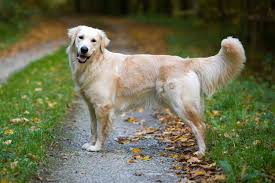
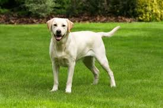
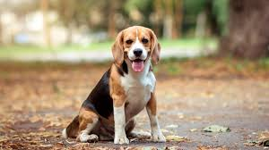
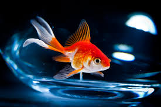

Meet Buddy
Buddy is a friendly and loyal Golden Retriever with a loving nature. He has a
beautiful golden coat and a gentle demeanor that makes him great with children
and other pets. Buddy loves to play fetch and enjoys long walks. He is looking
for a home where he can get plenty of exercise and affection. If you want a
devoted and cheerful companion, Buddy is the perfect choice. Adopt Buddy and
experience the unconditional love of a Golden Retriever!

Meet Max
Max is a loving and playful Labrador Retriever who is always ready for an
adventure. He has a sleek black coat and a friendly personality that makes
him a favorite among families. Max loves to swim and play fetch, and he is
always eager to learn new tricks. He is looking for a home where he can get
lots of exercise and attention. If you're looking for a loyal and energetic
pet, Max is the perfect match. Adopt Max and enjoy the joyful company of a
Labrador Retriever!

Meet Charlie
Charlie is a charming and friendly Beagle with a curious and playful nature.
He has a tri-colored coat and big, soulful eyes that will melt your heart.
Charlie loves to explore his surroundings and is always up for a game of
fetch. He is looking for a home where he can get plenty of exercise and
attention. If you're looking for a loyal and fun-loving companion, Charlie
is the perfect choice. Adopt Charlie and experience the joy of having a
Beagle by your side!

Meet Jerry
Jerry is a charming and friendly dog with a heart of gold, and he is
looking for a loving home to call his own. He is a medium-sized mixed
breed with soft, fluffy fur and soulful brown eyes that will melt your
heart. If you are looking for a loyal and loving companion who will
bring endless joy into your life, Jerry may be the perfect pet for
you. Adopting Jerry means giving him a second chance at a happy life,
and you will be rewarded with the unconditional love and companionship
that only a dog can provide. So don't hesitate to bring this wonderful
pup home today!

Meet Tom
Tom is a handsome and affectionate cat who is looking for his forever
home. He is a medium-sized domestic shorthair with sleek black and
white fur and striking green eyes that will capture your heart. If you
are looking for a loyal and loving companion who will provide you with
endless joy and entertainment, Tom may be the perfect pet for you.
Adopting Tom means giving him a second chance at a happy life, and you
will be rewarded with the unconditional love and companionship that
only a cat can provide mhn mmmm . So why not bring this wonderful
feline into your life today?

Meet Whiskers
Whiskers is a playful and curious cat who loves to explore and have fun.
He has a sleek, black coat and bright green eyes that are full of life.
Whiskers is looking for a forever home where he can get lots of love and
attention. If you're looking for a pet that will keep you entertained and
bring joy into your home, Whiskers is the cat for you. Adopt Whiskers and
give him the loving home he deserves!

Meet Thumper
Thumper is an adorable rabbit with a sweet and gentle nature. He has soft,
white fur and long ears that twitch when he's curious. Thumper loves to
hop around and explore his surroundings, and he enjoys being petted and
cuddled. He is looking for a caring home where he can feel safe and loved.
If you're looking for a small pet with a big heart, Thumper is the perfect
choice. Bring Thumper home and enjoy his delightful company!

Meet Polly
Polly is a colorful and talkative parrot who loves to socialize and mimic
sounds. She has vibrant feathers in shades of green, blue, and yellow, and
a playful personality that will brighten your day. Polly is looking for a
home where she can get plenty of interaction and stimulation. If you want a
pet that can entertain you with its antics and keep you company with its
chatter, Polly is the perfect match. Adopt Polly and enjoy the lively
presence she brings to your home!

Meet Bubbles
Bubbles is a beautiful goldfish with shimmering scales and a graceful swimming
style. He is peaceful and easy to care for, making him a great pet for any
home. Bubbles loves to explore his tank and interact with his surroundings.
He is looking for a home where he can swim freely and be admired. If you want
a pet that brings a sense of tranquility and beauty to your home, Bubbles is
the perfect choice. Bring Bubbles home and enjoy his calming presence!